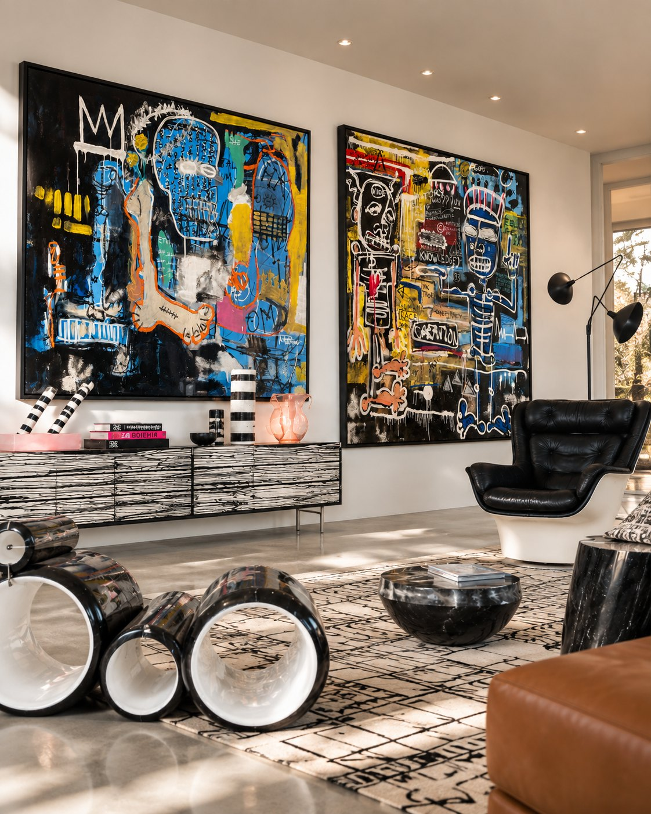
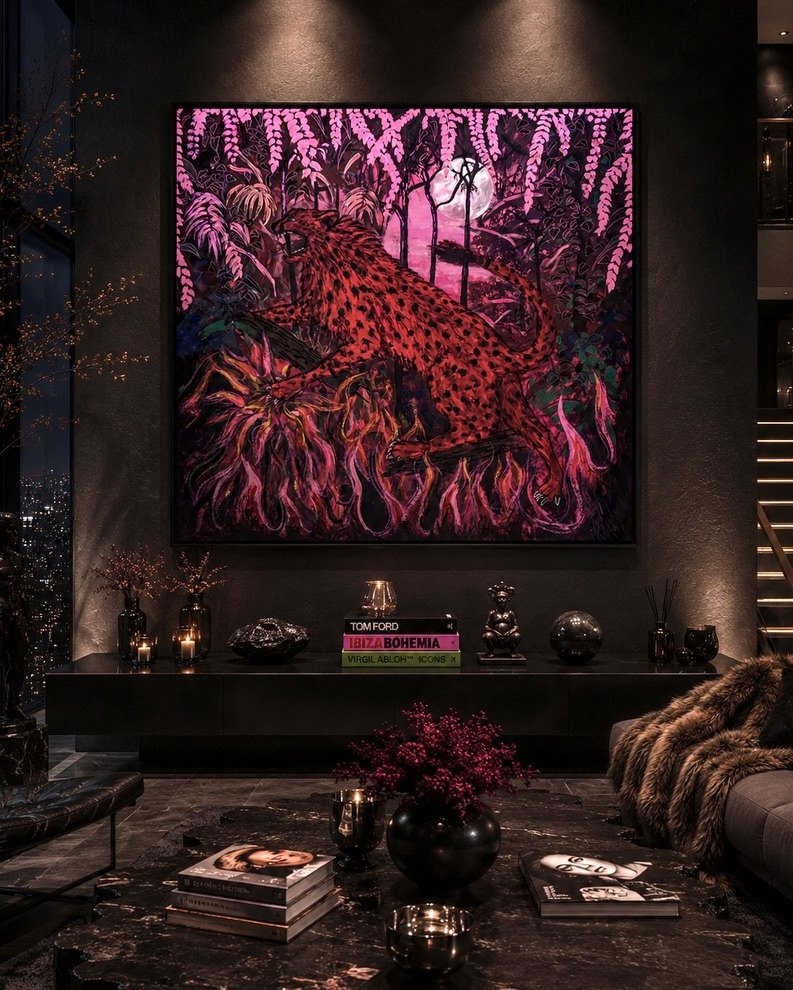

Skull
A skull for a double-height living room.
A large radial composition, colour flung outward from the centre so the skull sits inside a burst of orange, pink, blue and green. Made with Premier Stagers and Max Jacquet Design at 84 by 84 inches, sized to hold a brick wall above a curved sofa.


Pair
Two canvases for one long wall.
Painted as a pair in black, cobalt, yellow and orange, with line, figures and lettering built up in layers. The black ground ties them to the lacquered console and the leather chair below.

Leopard
A leopard for a dark room.
A red leopard moving through pink foliage and flame under a full moon. Shown here in a studio render: saturated colour chosen to glow against charcoal walls and low evening light.

Hearts, dining room
Three panels for a dining room.
A wall of layered hearts, sprayed and drawn over each other in pink, yellow, green, purple and white on a warm ground, with black outlines binding the whole surface together. The three canvases were sized to run the length of the sideboard, with the largest set forward, so the wall reads as one piece from the table and as three from up close. Made to bring colour into a room of dark lacquer, gilt and plaster.

Untitled (grey)
A grey abstract for a formal living room.
Layered, translucent brush strokes in greys, whites and warm blacks, built up over a black ground until the surface reads like folded fabric or smoke. The restrained palette was chosen to sit between plaster walls and rust velvet without competing, and the piece is scaled to fill the wall above the console between the two sconces.

Untitled (black and white)
Black and white above a beige sofa.
Broad, translucent strokes in white and grey over black, moving in a loose spiral, with the edges of the canvas left raw. Made for a room of warm wood, stone and rust so that the one cool element is the painting.

Untitled (black and white), detail
Detail.
The strokes are laid with wide brushes and knives so that each pass stays visible through the next; the surface cracks and pools where the paint was worked thick.

Hearts, pink
Hearts on a plaster wall.
Layered hearts in pink, orange, yellow and black, sprayed and drawn over each other, with drips left in place, lit from above by two spotlights. The plaster surrounding it is intentionally the same tone as the ground of the painting, so the piece appears to grow out of the wall.

Lion, sand colour
A lion in diamond dust for Newport Beach.
A lion drawn in sand-coloured tones on a dark ground and finished with diamond dust, the studio's signature layer of crushed glass that catches light from every angle. At 38 by 50 inches it sits above a white sofa and changes as you move through the room.

Script, two panels
Commissioned by a designer, from a reference.
The brief was two long panels in the spirit of a calligraphic street style the client loved. The studio studied that visual language, its rhythm, its marks, its density, and then composed something new in it: an original piece in the spirit of the reference, not a copy of any existing work. Each panel is two feet by twelve, built on a three-inch frame with stretched canvas. The ground is a mixture of white, off-white and beige, layered for a rustic, aged surface, and every black character is painted freehand in acrylic.

Words
A text painting for a lounge.
Rows of exclamations in a bold, worn sans serif, painted in silver and black over a black ground so the words emerge and recede depending on the light. The palette was chosen to sit with the black leather, brass and cowhide in the room, and the scale to fill the wall between the two chairs.

Painted heavy bag
An object for a home gym at The Harrison.
A heavy bag hand-painted with a portrait in black on white, with lettering and drips, so the bag reads as a piece of art when it hangs still. The studio paints on surfaces that are not canvas: leather, wood, metal, whatever the room calls for.

Painted trunks
Hand-lettered trunks for The Harrison.
A set of travel trunks in white leather with gold hardware, lettered by hand in black with the building's name and lines, wrapping around every face so the words break across the edges. Made as functional objects that carry the identity of the place.

The Harrison
The Harrison, San Francisco.
A large-scale painting in gold, black, blue and white, with figures, wings and lettering, made for the living room of a penthouse with the bay behind it. The gold ground answers the gilt and marble in the room; the black holds the wall from across the space.

Black heart
The Harrison, San Francisco. Built for a designer's staging of a penthouse.
The brief was a heart with real presence, so it was built rather than painted: a deep wooden frame, thick as a chocolate box, with canvas stretched over it. The whole form was finished in matte black for a velvet surface, and a poem runs around the entire perimeter in white hand lettering. The arrows are made by hand in wood with real feathers, painted gold and nailed straight into the frame.

Black heart, detail

Two, in red
Two, in red.
A seated couple drawn in black line on a red and pink ground, the man in a hat and pale suit, the woman in a black dress and gold chain, with grasses rising at the base. Made for a room of black leather and Persian rug, where the red is the only bright note.

Garden, in pink
Garden, in pink.
A couple among flowers and leaves, the man in a red patterned shirt and hat, the woman in a printed headwrap, drawn in dense black line against a pink and purple sky. A companion in spirit to Two, in red.

Riders
Riders.
Two figures on a black horse, one in a cowboy hat and one in a feathered headdress, both in red, against a red landscape with a yellow sun. Dense black line and a limited palette, framed in a black float frame.

Constellation
Constellation for an entry hall.
Concentric heart forms in black on black, filling a tall canvas above a black console in a white hall. The piece was made to be the first thing seen from the door: near-monochrome, so it reads as a form before it reads as an image.

Revenge
Revenge.
One word broken across three lines in heavy black capitals on a white, textured ground, painted large enough to fill a wall. A text piece made for a client who wanted one word and nothing else.

Vortex
Vortex, in the studio.
A large spiral in black and white photographed in the studio with the artist. The vortex is a recurring form in the studio's work: painted in black and white here, in colour elsewhere, at whatever scale the wall asks for.